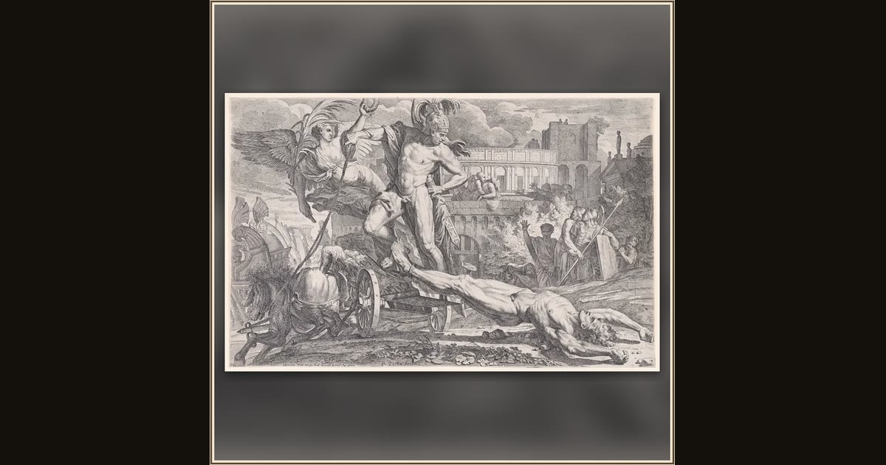

Achilles dragging the body of Hector around the walls of Troy
Pietro Testa · 1648–50 · met
Achilles stands on his chariot as Hector's body trails behind, his head against the ground, after Achilles binds him to the car (22.396–404). Explore its place in Homer's Iliad, Book XXII, line 398.